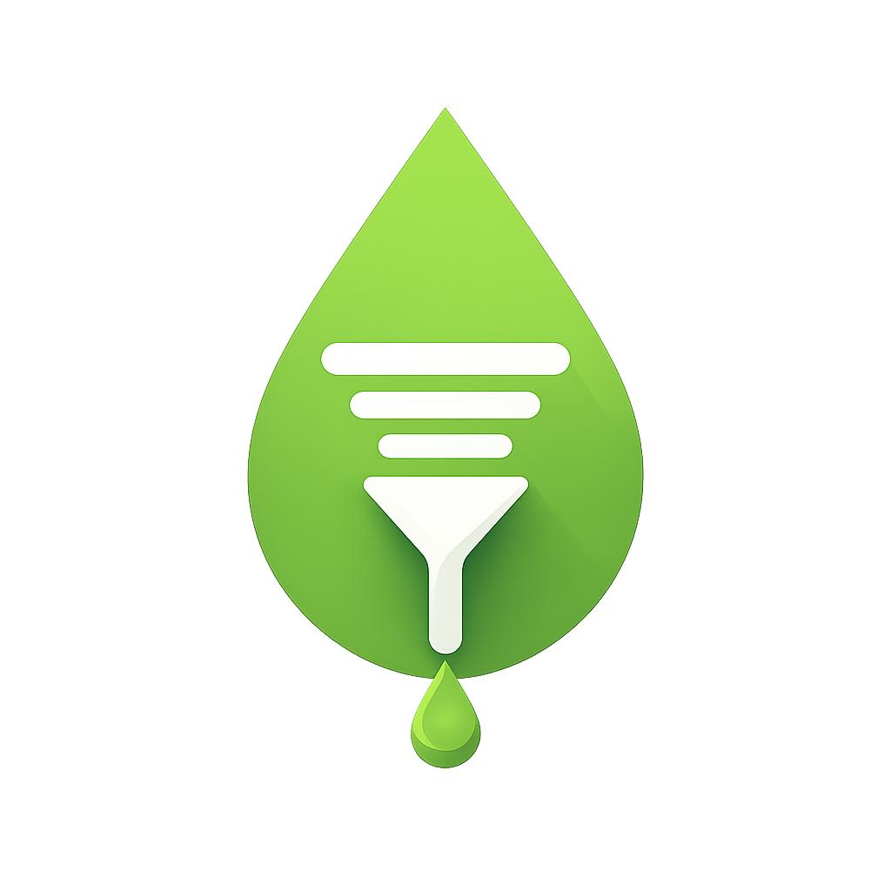

Ekşi Sözlük için topluluk tabanlı ve yapay zeka destekli akıllı moderasyon eklentisi ve mobil okuyucu uygulaması. Kutsal bilgi kaynağındaki troll kirliliğini, provokasyonları, fanatizmi ve nefret söylemini topluluğun ve yapay zekanın gücüyle hem tarayıcınızda hem de telefonunuzda süzün.
Ekşi Sözlük'e girip iki dakika gündemi okuyayım derken kendinizi dini/milli değerlere hakaret eden, parti fanatizmiyle gözü dönmüş veya sırf etkileşim kasmak için nefret kusan başlıklarda mı buluyorsunuz? Deveye hendek atlatmak troll'e laf anlatmaktan kolaydır! Sözgeç, trolleri sizin için görünmez yapıyor. Siz arkanıza yaslanın, Sözgeç trolleri süzsün!
Aşağıdaki interaktif simülatörde Sözgeç'in Ekşi Sözlük arayüzüne nasıl müdahale ettiğini canlı olarak deneyimleyebilirsiniz. Rozetin üzerine gelerek detay puanlarını görün veya gizlenmiş entry'yi açıp kapatın!
Sözgeç, siz Ekşi Sözlük'te gezinirken arka planda sessizce çalışır ve size 3 temel kolaylık sunar:
Sayfada yüklenen her entry'nin yazarı veritabanı ile eşleştirilir. Yazar önceden raporlanıp geçmiş entry analizi yapılmışsa isminin yanında şık bir rozet belirir. Yüksek skorlular kırmızı/uyarıcı, orta skorlular pastel tonlarda işaretlenir. Fareyle üzerine geldiğinizde (Tooltip) 4 farklı kategorideki (Dini, Milli, Siyasi, Nefret) yüzde oranlarını görürsünüz.
Belirlediğiniz hassasiyet barajını aşan yazarların entry'leri ekranda gösterilmez. Yerine Sözgeç'in modern Bilgi Kutucuğu (Placeholder) yerleştirilir. "Yav acaba ne yazmış bu troll?" diye merak ederseniz "İçeriği Göster" butonuna basarak tek tıkla okuyabilirsiniz.
Gözünüze batan bir troll gördüğünüzde isminin yanındaki 🚫 tuşuna basmanız yeterlidir. Yazar anında sizin kara listenize eklenip ekrandan buharlaşır; aynı zamanda yapay zeka sistemimize raporlanır.
Sözgeç yazarları sadece "Troll / Değil" diye siyah-beyaz ayırmaz; onları 4 farklı boyutta detaylıca puanlar:
Farklı inanç sistemlerine, kutsallara ve dini hassasiyetlere yönelik provokatif ve hakaret içerikli paylaşımları kapsar.
Atatürk, cumhuriyet değerleri, tarihi, toplumsal ve milli kimliğe yönelik bilinçli yıpratıcı saldırıları ve kışkırtıcı başlıkları analiz eder.
Zehirli, tek taraflı, kutuplaştırıcı ve manipülatif parti/ideoloji fanatizmi içeren entry'leri tespit eder.
Cinsiyet, ırk, topluluklar veya kişilere yönelik doğrudan hakaret, hedef gösterme ve ayrımcılığı ölçer.
Siz uzantı menüsünden Slider'ı çekerek filtreleme sertliğini anında değiştirebilirsiniz!
Sözgeç sadece tarayıcıyla sınırlı kalmadı! Ekşi Sözlük okurlarının yıllardır mobil cihazlarda muzdarip olduğu bilgi kirliliği, provokasyon ve trollerden kurtulmalarını sağlayan, sıfırdan geliştirilmiş üçüncü parti akıllı bir mobil okuyucu uygulaması da cebinizde. İşte uygulamanın sunduğu kafa rahatlatan özellikler:
Mobil uygulamada gezinirken gözünüzü kanatan, aşırı toksik bir entry'ye mi denk geldiniz? Entry'nin sağ altındaki kırmızı butona dokunup "Sözgeç'e Rapor Et ve Engelle" dediğiniz an yazar hem sizin listenizde engellenir hem de yapay zeka analizi için otomatik sıraya alınır.
Gündemde kasıtlı olarak en tepeye çıkarılan, kışkırtıcı veya zerre ilginizi çekmeyen başlıklar mı var? Başlığın içindeyken sağ üst köşedeki engelleme ikonuna basarak o konuyu tamamen hayatınızdan çıkarabilir, Gündem ve Şükela listelerinizi tertemiz tutabilirsiniz.
Engellediğiniz veya skoru yüksek yazarların entry'leri sayfadan komple silinip akışı bozmaz. Yerine zarif bir bilgi kutucuğu gelir. "Acaba ne yazmış?" diye merak ederseniz "İçeriği Göster" diyerek tek seferlik okuyabilirsiniz.
Sözlükteki bir yazarın yanında beliren "Troll Skoru: %85" rozetine uzun basarsanız (tooltip), yapay zekanın o yazara hangi kategoriden (Dini, Milli, Siyasi, Nefret) kaç puan verdiğini gösteren karne detaylarını şeffafça görebilirsiniz.
Sizin engellediğiniz bir yazar "Troll" olarak tescillendiğinde ortak bulut listesine eklenir. Telefonunuz bu listeyi arka planda günde birkaç kez otomatik indirir. Böylece siz o toksik yazarı daha hiç görmeden telefonunuzda otomatik engellenmiş olur!
Sözgeç sadece basit bir kelime engelleyici değildir; topluluk bildirimlerini akıllı algoritmalarla harmanlayan gelişmiş bir moderasyon sistemidir.
Ekşi Sözlük'te aşağı kaydırdıkça yeni yüklenen entry'ler anında taranır. Rahatsız edici içerikler daha gözünüzün önüne düşmeden milisaniyeler içinde filtrelenir.
Bir yazarı 🚫 ile raporladığınızda eklenti veya mobil uygulama yazarın kamuya açık girdilerini inceleyerek Yapay Zekaya iletir. Yapay Zeka metinleri anlamsal olarak okur, niyet analizi yapar ve topluluk puanını belirler.
Troll skorları cihazınızda hazır tutulur, böylece engelleme işlemi hiçbir gecikme olmadan anında gerçekleşir. "Listeyi Güncelle" butonuna bastığınızda güncel topluluk verileri saniyeler içinde yenilenir.
Sözgeç'i Chrome Web Mağazası'ndan tarayıcınıza ekleyin veya Android uygulamasını telefonunuza kurun.
Uzantı ikonuna veya mobil uygulama ayarlar menüsüne girerek kendi keyfinize göre hassasiyet slider'ını çekin. İster hafif filtreleyin, ister sıfır tolerans uygulayın.
Ekşi Sözlük'e girip başlıkları okumaya başlayın. Sözgeç arka planda trolleri otomatik süzmeye başlar.
Gözden kaçan trolleri 🚫 veya engelleme ikonuna basarak yerel listenize atın ve AI ordumuza raporlayarak topluluğa katkı sağlayın!
Sözgeç, sizin kişisel Ekşi Sözlük hesap şifrelerinizi, mesajlarınızı veya özel verilerinizi asla okumaz, kaydetmez ve üçüncü şahıslara iletmez. Tüm kişiselleştirilmiş engelleme ayarlarınız kendi cihazınızdaki yerel hafızada saklanır. Yapay zeka raporlamaları yalnızca kamuya açık olan entry metinleri üzerinden anonim olarak gerçekleştirilir.
Sözgeç Gizlilik Politikası'nı İnceleyin Çocuk Güvenliği Politikası'nı İnceleyin
Ekşi Sözlük okuma keyfinizi trollerin elinden geri alın. Sözgeç eklentisini veya mobil uygulamasını hemen kurup temiz bir akışın tadını çıkarın!
Chrome, Edge, Brave, Opera ve Vivaldi tarayıcılarına hemen ekleyin.
Chrome Mağazasına GitAndroid cihazınıza Sözgeç üçüncü parti okuyucu uygulamasını kurun.
Google Play (Yakında)